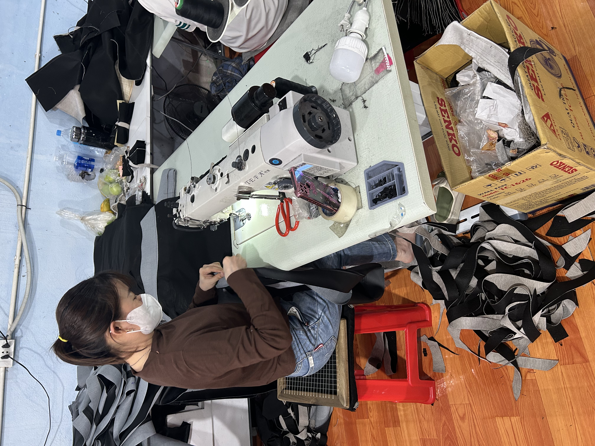
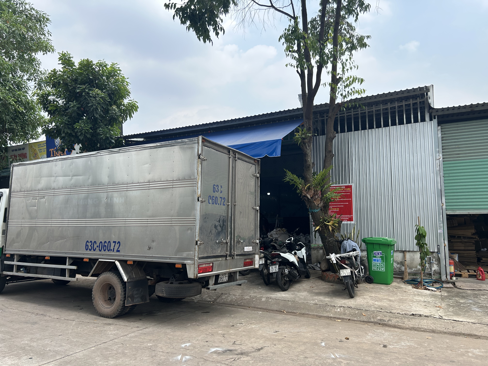
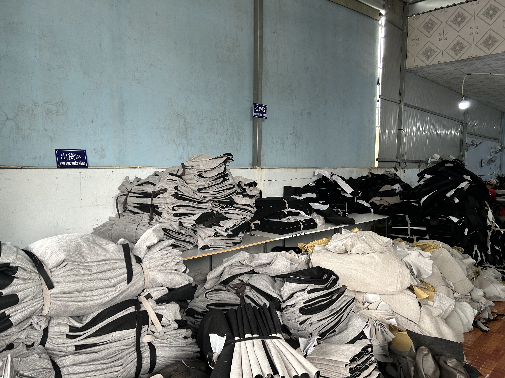
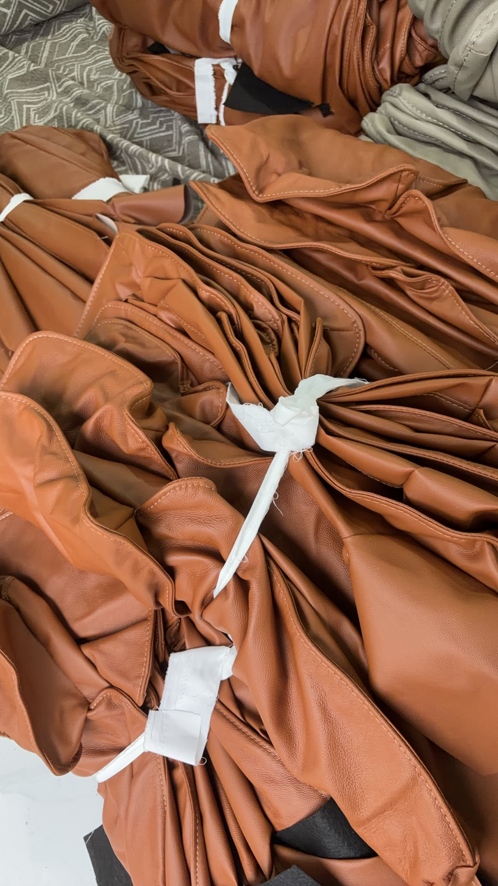
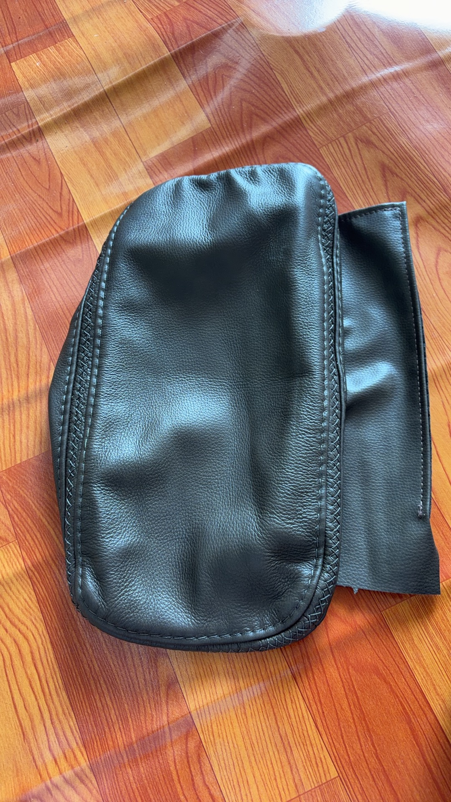
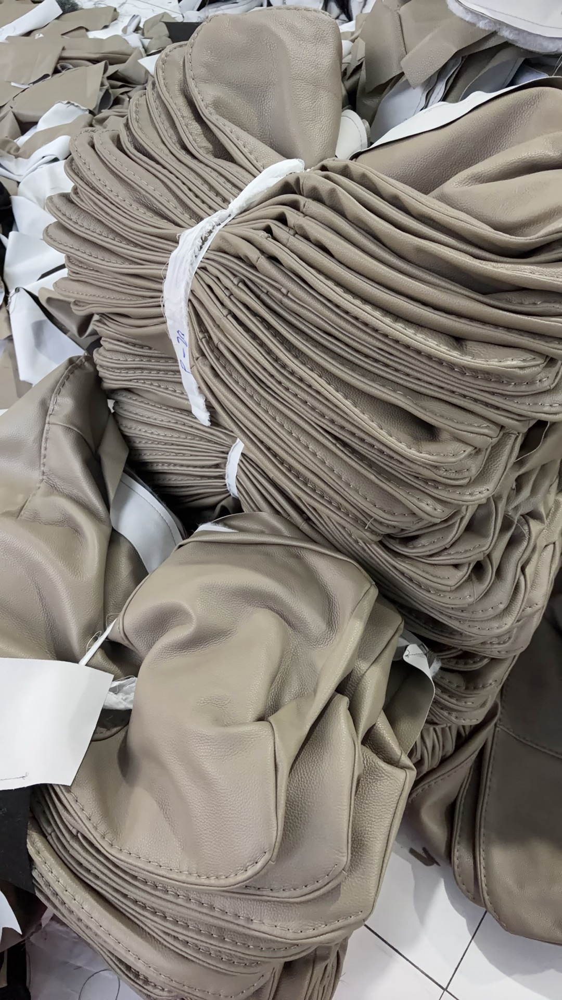
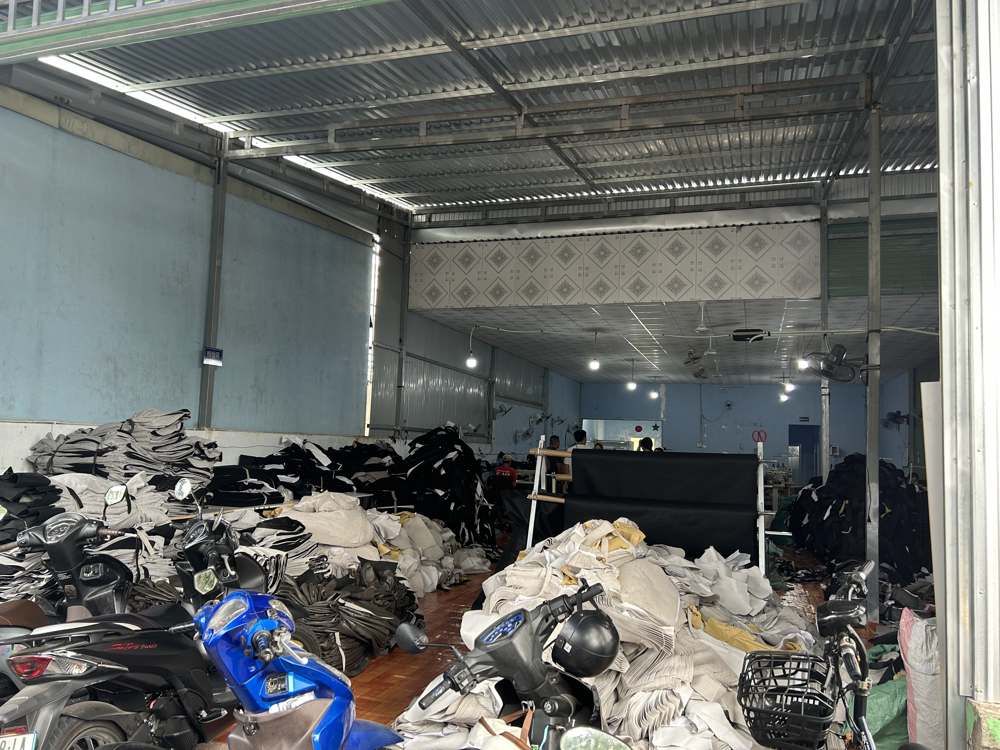

本革ソファカバー、布製張り製品、自動車シートクッションの精密縫製
ホーチミン市で、本革ソファカバー、布製ソファカバー、自動車シートクッション、各種張り製品の縫製を行っています。現物サンプル、型紙、参考画像をもとに、素材の扱い方、縫い目の見せ方、納期、出荷前確認の進め方を事前にすり合わせてから生産に入ります。

主な対応内容
- 本革・布製ソファカバーの縫製加工。
- 自動車シートクッションやヘッドレスト部品の縫製。
- 出荷前の縫い目と外観の目視確認。
- サンプル、寸法、仕上がり要件に合わせた柔軟対応。
Unit 2, Lot 141, Ni13 Street, Quarter 1, Thoi Hoa Ward, Ho Chi Minh City
お問い合わせ
工場へ直接お問い合わせください
ホーチミン市でソファカバー縫製工場を探している場合や、ベトナムで張り製品の縫製パートナーが必要な場合は、直接ご相談ください。
ベトナム X 加工有限責任会社
電話: 0988 218 301
住所: Unit 2, Lot 141, Ni13 Street, Quarter 1, Thoi Hoa Ward, Ho Chi Minh City, Vietnam
地図を見る工場の通常営業時間で対応しています。
- 月曜日07:30 - 17:00
- 火曜日07:30 - 17:00
- 水曜日07:30 - 17:00
- 木曜日07:30 - 17:00
- 金曜日07:30 - 17:00
- 土曜日07:30 - 17:00
- 日曜日07:30 - 17:00
- 本革・布製ソファカバー縫製。
- 自動車シートクッションと関連部品。
- 各種張り製品のカスタム縫製。
- 見た目と縫い品質を重視する案件。
会社案内
サービス内容、進行工程、工場体制、実際の写真
ここでは、対応している製品、進め方、工場の様子、実際の製品写真をまとめて確認できます。
サービス
張り製品とクッション向けの主な縫製対応
多く扱うのは、ソファカバー、自動車シートクッション、各種張り製品の案件です。見た目の整い方、形状、納期の管理まで含めて対応します。
本革ソファカバーと布製ソファカバー
縫い目の見え方、角の処理、表面の清潔感が重要なソファカバー縫製に対応し、家具用途にふさわしい仕上がりを目指します。
自動車シートクッションと関連部品
自動車シートクッション、ヘッドレストカバー、その他シート関連の張り部品について、形状と縫製精度を意識して対応します。
サンプルに基づくカスタム縫製
現物サンプル、型紙、参考画像などをもとに、材料の扱い方や縫製ポイント、仕上がり基準をすり合わせます。
進行
加工案件に合わせやすいシンプルな進行フロー
現物サンプル、型紙、参考画像のどれからでもご相談いただけます。まず寸法、素材、仕上がりの基準をそろえてから進めます。
1
要件確認
最初に、製品種類、素材、予定数量、仕上がり基準を確認します。
2
サンプル確認
形状、縁処理、接合ポイントなど、見た目に影響する要素を確認します。
3
縫製と検品
縫製工程の中でステッチと表面状態を見ながら進行します。
4
納期に沿って出荷
梱包と出荷準備を整え、事前に共有したスケジュールに沿って納品します。
工場
ホーチミン市の工場体制と日常運営の強み
お客様から最初によく聞かれるのは、返信の速さ、サンプルへの再現性、納期の安定です。その3点は日々の運営でも重視しています。
ソファカバー、自動車用クッション、そのほか張り製品の縫製を日常的に扱っています。材料、半製品、完成品を工程ごとに分けることで、外観と縫い状態を確認しやすくしています。
ホーチミン市 Thoi Hoa Ward にあるため、現地でのやり取りを進めやすく、ベトナム国内の他地域からの相談にも柔軟に対応できます。
丁寧な縫い仕上げ
均一なステッチ、整った折り返し、目に見える面の清潔感を重視します。
現地で素早く対応
ホーチミン市内でのサンプル確認や進行共有を進めやすい環境にあります。
出荷前の確認
出荷前に外観と縫い目を確認し、見た目の安定を意識しています。

写真
工場、半製品、完成部品の実例写真
ここでは、工場の雰囲気、材料の扱い方、完成部品の見え方を写真でそのまま確認できます。







FAQ
ベトナムの縫製工場を探す際によくある質問
ここでは、ホーチミン市で張り製品の縫製パートナーを探すお客様から、よくいただく質問をまとめました。
どのような製品に対応していますか。
本革ソファカバー、布製ソファカバー、自動車シートクッション、ヘッドレストカバーなど、縫い品質が重要な張り製品に対応しています。
サンプルや型紙から生産できますか。
はい。現物サンプル、型紙、参考画像などをもとに、縫製方法と仕上がりの方向性を確認したうえで進めます。
どの地域の顧客に対応していますか。
ホーチミン市を中心に、ベトナム国内のさまざまなお客様からの相談に対応しています。
見積もりはどのように依頼できますか。
0988 218 301までお電話いただければ、製品種類、素材、予定数量、参考資料などを確認しながら進めます。